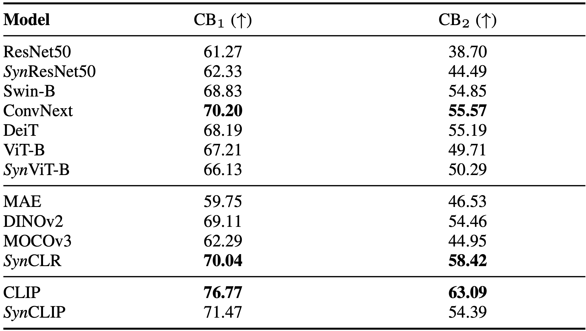
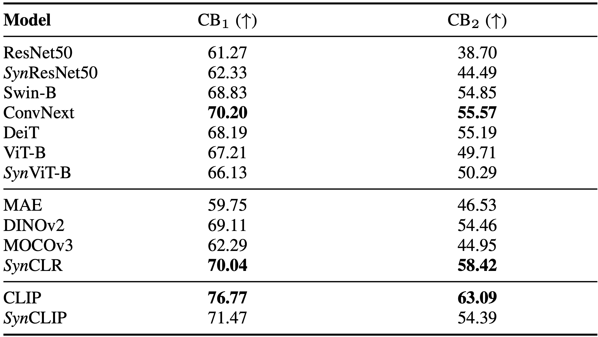
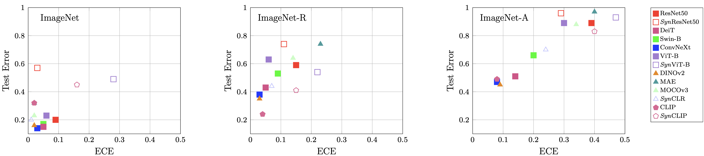
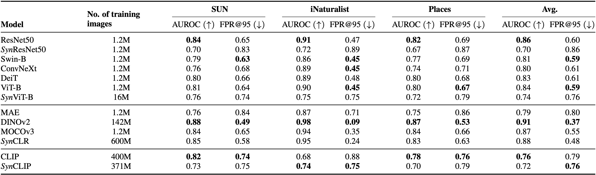
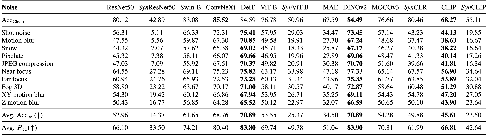
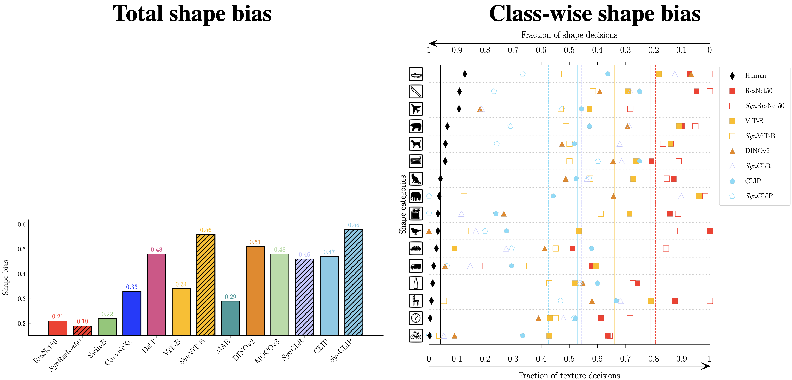
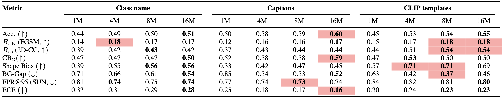
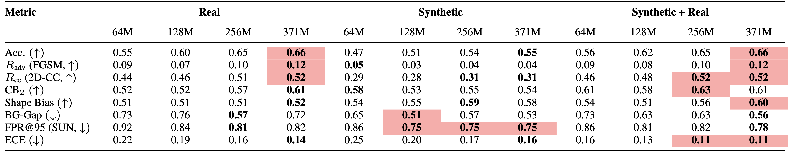

Context Bias
SynCLIP and SynCLR models are robust to changes in context and comparable strong self-supervised models like DINOv2 and ConvNeXt.
We find that models trained with synthetic data are comparable with SOTA models trained with real data on a wide array of robustness metrics like shape bias, context bias, background bias etc. Still, two major area where current models trained with synthetic images lack behind are the robustness of common corruptions and adversarial pertubations.
A long-standing challenge in developing machine learning approaches has been the lack of high-quality labeled data. Recently, models trained with purely synthetic data, here termed synthetic clones, generated using large-scale pre-trained diffusion models have shown promising results in overcoming this annotation bottleneck. As these synthetic clone models progress, they are likely to be deployed in challenging real-world settings, yet their suitability remains understudied.
Our work addresses this gap by providing the first benchmark for three classes of synthetic clone models, namely supervised, self-supervised, and multi-modal ones, across a range of robustness measures. We show that existing synthetic self-supervised and multi-modal clones are comparable to or outperform state-of-the-art real-image baselines for a range of robustness metrics ‐‐ shape bias, background bias, calibration, etc. However, we also find that synthetic clones are much more susceptible to adversarial and real-world noise than models trained with real data. To address this, we find that combining both real and synthetic data further increases the robustness, and that the choice of prompt used for generating synthetic images plays an important part in the robustness of synthetic clones.
SynCLIP and SynCLR models are robust to changes in context and comparable strong self-supervised models like DINOv2 and ConvNeXt.

Synthetic clones perform on par in terms of background bias with a SOTA baseline model trained with real data.
Synthetic clones are (mostly) well calibrated for the in-distribution dataset. On slightly out-of-distribution (OOD) dataset like ImageNet-R synthetic again are well calibrated compared to their real counterparts. For more diffcult OOD dataset such as ImageNet-A synthetic clones are not well calibrated.
SynCLR and SynCLIP are comparable to the baseline models in their category for OOD detection. Even with 16 times more data than the baseline, Syn ViT-B clearly lags behind supervised models trained with real data.
Synthetic clones are significantly less robust to common corruptions in images than baselines trained with real images.
Synthetic clones tend to be more shape-biased than texture-biased. (left) Total shape bias for synthetic clones and thier real counterparts (right) Class-wise shape bias of synthetic clones and their real counterparts. Solid lines respresent the avg shape bias of a model.
Prompts based on captions and CLIP templates are much better for creating robust synthetic clones compared to just using class names. This can be attributed to more diverse images being generated with more descriptive text.
The table below shows that adding real data improves the performance on many key metrics (ECE, adversarial accuracy, shape bias) while remaining comparable on others. Training with just synthetic images or a combination of synthetic and real images creates more robust models compared to models trained just on real data.
Synthetic clone models are significantly more vulnerable to adversarial examples, particularly supervised synthetic clones, than models trained with real data.
@inproceedings{singh2024synthetic,
author = {Krishnakant Singh and Thanush Navratanam and Jannik Holmer and Simone Scahub-Meyer and Stefan Roth},
title = {Is Synthetic Data all We Need? Benchmarking the Robustness of Models Trained with Synthetic Images},
booktitle = {CVPR 2024 Workshop SyntaGen: Harnessing Generative Models for Synthetic Visual Datasets},
year = {2024},
}